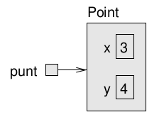
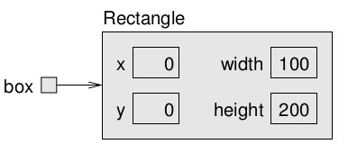
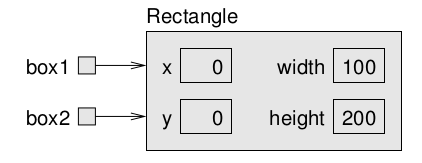

Mutable objects¶
Objecten waarvan gegevens (er wordt ook wel gesproken van ‘eigenschappen’) gewijzigd kunnen worden worden mutable genoemd.
Klasse Point¶
Point is een mutable klasse. Objecten van het type Point zijn mutable objecten.
Documentatie: https://docs.oracle.com/en/java/javase/11/docs/api/java.desktop/java/awt/Point.html
Nieuwe punt maken:
import java.awt.Point;
Point punt;
punt = new Point(3, 4);
System.out.println(punt);
System.out.println("De x-coördinaat is: " + punt.getX());
java.awt.Point[x=3,y=4]
De x-coördinaat is: 3.0
Met een geheugen-diagram kan de variabele punt van type Point als volgt worden weergegeven: 
Locatie veranderen:
punt.setLocation(10, 4);
System.out.println(punt);
System.out.println("De x-coördinaat is: " + punt.getX());
System.out.println("De y-coördinaat is: " + punt.getY());
java.awt.Point[x=10,y=4]
De x-coördinaat is: 10.0
De y-coördinaat is: 4.0
Het bestaande object wordt gewijzigd, want Point is mutable.
Daarom geeft de methode setLocation niets terug. De methode heeft direct effect op het object waarvan de methode wordt aangeroepen.
Objecten als parameters¶
Het is mogelijk om objecten als parameters door te geven bij aanroep van methoden, net zoals primitieven.
Voorbeeld:
public static void printPoint(Point p) {
System.out.println("(" + p.getX() + ", " + p.getY() + ")");
}
punt = new Point(9, 4);
printPoint(punt);
(9.0, 4.0)
Een ander voorbeeld:
public static double calculateDistance(Point p1, Point p2) {
double dx = p2.getX() - p1.getX();
double dy = p2.getY() - p1.getY();
return Math.sqrt(dx * dx + dy * dy);
}
Point punt1 = new Point(9, 4);
Point punt2 = new Point(6, 8);
System.out.println(calculateDistance(punt1, punt2));
5.0
Om de afstand tussen twee punten te berekenen, kunnen óók de x- en y-coördinaten worden doorgegeven.
Het voorbeeld zal er dan als volgt uit zien:
public static double calculateDistance(int x1, int y1, int x2, int y2) {
int dx = x1 - x2;
int dy = y1 - y2;
return Math.sqrt(dx * dx + dy * dy);
}
Point punt1 = new Point(9, 4);
Point punt2 = new Point(6, 8);
System.out.println(calculateDistance((int)punt1.getX(), (int)punt1.getY(), (int)punt2.getX(), (int)punt2.getY()));
5.0
Een object (correct verwoord: referentie naar object) doorgeven is eenvoudiger en maakt code beter leesbaar.
Overigens heeft de klasse Point al een methode om afstand tussen 2 punten te bepalen. In dat geval is het schrijven van een eigen methode overbodig:
System.out.println(punt1.distance(punt2));
System.out.println(punt2.distance(punt1)); // kan ook
5.0
5.0
Objecten als return-waardes¶
Net zoals het mogelijk is om ojecten als parameters door te geven bij aanroep van methoden, zo is het ook mogelijk om objecten terug te geven als resultaat.
Voorbeeld:
public static Point createStartpoint() {
return new Point(0, 0);
}
Point punt = createStartpoint();
System.out.println(punt);
java.awt.Point[x=0,y=0]
Immutable objecten kunnen veranderd worden, ook onbedoeld!
public static Point getPointBetween(Point p1, Point p2) {
punt1.x=(punt1.x+punt2.x)/2;
punt1.y=(punt1.y+punt2.y)/2;
return punt1;
}
Point punt1 = new Point(2, 4);
Point punt2 = new Point(10, 0);
Point punt3 = getPointBetween(punt1, punt2);
System.out.println(punt1);
System.out.println(punt2);
System.out.println(punt3);
java.awt.Point[x=6,y=2]
java.awt.Point[x=10,y=0]
java.awt.Point[x=6,y=2]
Wat is hier het probleem?
punt1 wordt gewijzigd, en die wijziging geldt ook buiten de methode. Deze verandering is onbedoeld.
Correcte methode:
public static Point getPointBetween(Point p1, Point p2) {
double x=(punt1.getX()+punt2.getX())/2;
double y=(punt1.getY()+punt2.getY())/2;
return new Point((int)x,(int)y); // (int) -> cast van double naar integer
}
Point punt1 = new Point(2, 4);
Point punt2 = new Point(10, 0);
Point punt3 = getPointBetween(punt1, punt2);
System.out.println(punt1);
System.out.println(punt2);
System.out.println(punt3);
java.awt.Point[x=2,y=4]
java.awt.Point[x=10,y=0]
java.awt.Point[x=6,y=2]
De objecten waar meegegeven argumenten naar verwijzen blijven ongewijzigd. Het gevraagde punt wordt door de functie teruggegeven. Dit correcte gedrag is te bereiken door de objecten waar argumenten naar verwijzen niet te veranderen. In het geval een object als resultaat wordt teruggegeven, dient in de regel een nieuw object te worden gemaakt.
Klasse Rectangle¶
De klasse Rectangle representeert een rechthoek. Ook deze klasse is mutable.
Rectangle maken:
import java.awt.Rectangle;
Rectangle box = new Rectangle(0, 0, 100, 200);
System.out.println(box);
java.awt.Rectangle[x=0,y=0,width=100,height=200]
Met een geheugen-diagram kan de variabele box van type Rectangle als volgt worden weergegeven: 
Locatie veranderen:
box.setLocation(50, 100);
System.out.println(box);
java.awt.Rectangle[x=50,y=100,width=100,height=200]
Een geheugen-diagram kan de gewijzigde situatie als volgt worden weergegeven:

Het bestaande object wordt gewijzigd, want Point is mutable.
Daarom geeft de methode setLocation niets terug. De methode heeft direct effect op het object waarvan de methode wordt aangeroepen.
Een voorbeeld van een methode waarbij zowel de parameter als de return-waarde objecten zijn:
public static Point findCenter(Rectangle box) {
int x = box.x + box.width / 2;
int y = box.y + box.height / 2;
return new Point(x, y);
}
Point center = findCenter( new Rectangle(10, 10, 100, 30 ));
System.out.println(center);
java.awt.Point[x=60,y=25]
Referenties¶
Ter herinnering: Als je een object toekent aan een variabele, dan wordt een referentie naar dat object toegekend.
Er kunnen meerdere referenties zijn naar hetzelfde object.
Voorbeeld:
Rectangle box1 = new Rectangle(0, 0, 100, 200);
Rectangle box2 = box1;
System.out.println(box1);
System.out.println(box2);
java.awt.Rectangle[x=0,y=0,width=100,height=200]
java.awt.Rectangle[x=0,y=0,width=100,height=200]
Met een geheugen-diagram kan deze situatie als volgt worden weergegeven: 
Er is sprake van één object, en twee referenties.
Verandering van het (mutable) object:
box1.grow(50, 50);
System.out.println(box1);
System.out.println(box2);
java.awt.Rectangle[x=-50,y=-50,width=200,height=300]
java.awt.Rectangle[x=-50,y=-50,width=200,height=300]
De verandering is via beide variabelen (referenties) zichtbaar, want ze verwijderen naar hetzelfde object.
Met een geheugen-diagram kan deze situatie als volgt worden weergegeven:

Dit wordt ook wel aliasing genoemd.
Code met verschillende verwijzingen naar hetzelfde object kan verwarrend zijn!
Garbage collector¶
Met het keyword new wordt een object gemaakt, maar hoe wordt een object verwijderd?
Vuistregel: Een object bestaat niet meer, op het moment dat er geen referenties meer zijn.
De garbage collector in de Java virtuele machine ruimt deze objecten op, zodat het geheugen dat deze objecten innemen weer beschikbaar komt.
Voorbeeld:
Point punt = new Point(3, 4);
System.out.println(punt);
punt = null;
System.out.println(punt);
java.awt.Point[x=3,y=4]
null
Zodra de referentie punt de waarde null krijgt, heeft het object, dat op de eerste regel wordt gemaakt, geen referentie meer. Het object bestaat dan nog wel, maar zal op een gegeven moment worden opgeruimd door de garbage collector. Wanneer dit precies gebeurt, is niet te beïnvloeden.
Klasse StringBuilder¶
Strings zijn immutable.
Hoeveel objecten worden gemaakt in het onderstaande voorbeeld?:
public static String duplicateText(String text, int n) {
String result="";
for(int i=0; i<n; i++) {
result=result+text;
}
return result;
}
System.out.println( duplicateText("Hoi", 10) ); // Hoeveel strings worden hier gemaakt?
HoiHoiHoiHoiHoiHoiHoiHoiHoiHoi
Voor elke bewerking met de immutable String, wordt een nieuw object gemaakt. In het bovenstaande voorbeeld ontstaan de strings “”, “Hoi”, “HoiHoi”, “HoiHoiHoi”, etc.. Hoewel deze worden opgeruimd door de garbage collector, is dit niet efficiënt.
Daarom zijn er ook mutable klassen waarin een string wordt opgeslagen: StringBuilder en StringBuffer.
Het verschil tussen deze twee klassen is nogal technisch: StringBuilder is sneller dan StringBuffer, maar niet thread safe. Als dat geen probleem is, dan kan StringBuilder gebruikt worden.
De methode duplicateText kan aangepast worden, zodat StringBuilder wordt gebruikt:
public static String duplicateText_sb(String text, int n) {
StringBuilder result=new StringBuilder();
for(int i=0; i<n; i++) {
result.append(text);
}
return result.toString();
}
System.out.println( duplicateText_sb("Hoi", 10) );
HoiHoiHoiHoiHoiHoiHoiHoiHoiHoi
Mutable vs Immutable¶
Klassen en objecten zijn mutable of immutable.
Beide hebben voor- en nadelen.
Immutable klassen en objecten worden gebruikt voor betrouwbaarheid, performance en eenvoud.
Mutable klassen bieden meestal meer flexibiliteit en zijn efficiënter als gegevens veranderen.
Voorbeelden van immutable klassen zijn String, BigInteger en de wrapper-types.
Voorbeelden van mutable klassen zijn Point, Rectangle en StringBuilder.
Documentatie van alle klassen is te vinden op https://docs.oracle.com/en/java/javase/11/docs/api/allclasses.html